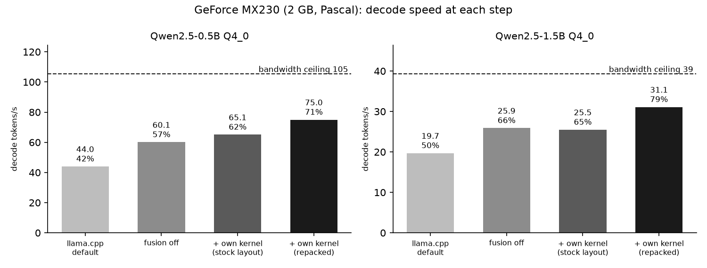

A 2017 Pascal laptop GPU, measured against its own bandwidth ceiling. Profiling found a llama.cpp optimization that slows this chip down, and hand-written DP4A kernels took Qwen2.5-0.5B from 44 to 75 tokens/s with unchanged perplexity.
GeForce MX230: Pascal, compute capability 6.1, 2 SMs, 2 GB GDDR5 on a 64-bit bus, no tensor
cores. CUDA 13 dropped Pascal, PyTorch 2.15 drops it, vLLM needs sm_70+, FlashAttention has no Pascal
path, and Nsight Compute cannot profile it. What is left: llama.cpp built with CUDA 12.9, the old
nvprof, and hand-written kernels.
To produce one token, decoding reads every weight once. The chip can do far more math per byte than that needs, so memory bandwidth sets the speed limit.
A read-only kernel measures 36.5 GB/s (65% of the 56 GB/s spec). Qwen2.5-0.5B Q4_0 reads 346 MB per token, so its ceiling is about 105 tokens/s. Out of the box, llama.cpp reaches 44: 42%.
| trick | result on the MX230 |
|---|---|
| Flash attention | decode at 4K context 9.5 → 16.4 tok/s |
| Prefix cache | long-system-prompt answer 5.9 s → 0.9 s |
| INT8 KV cache | half the KV memory, but 24% slower alone |
| Smaller prefill batch | frees ~240 MB for −4% prefill; with INT8 KV, a 3B model + 4K context fits |
| CPU/GPU layer split | all-on-GPU always fastest (3B: 3.2 → 12 tok/s) |
| Speculative, 0.5B draft | +3% on code, −29% on prose: the draft costs ~45% of the target |
| N-gram drafting | 0–6% of drafts accepted on fresh text |
Forcing CUDA graphs on (llama.cpp disables them before Volta) changed nothing, so launch overhead
was not the problem. nvprof showed the GPU busy the whole time, with one kernel, the
fused FFN gate+up matvec, taking half of every token at 10 GB/s. Run separately, the same two
matvecs take 2 × 127 µs instead of 475 µs fused.
| model | fusion on (default) | GGML_CUDA_DISABLE_FUSION=1 | change |
|---|---|---|---|
| Qwen2.5-0.5B Q4_0 | 44.0 | 59.7 | +36% |
| Qwen2.5-0.5B Q8_0 | 41.3 | 49.4 | +20% |
| Qwen2.5-1.5B Q4_0 | 19.7 | 25.8 | +31% |
Greedy output is byte-for-byte identical. Reported as llama.cpp #32229. The exact cause is not proven: the fused kernel uses 80 registers per thread against 66, but hardware counters could not be read on this driver.
Seven Q4_0 matvec kernels, each checked against a CPU double-precision reference and timed on DRAM (weights rotated so the 256 KB L2 cannot help).
__dp4a does 4 int8 multiply-adds per instruction. 27–61% on the stock 18-byte blocks.| 0.5B matrix | llama.cpp | own, stock layout | own, repacked |
|---|---|---|---|
| FFN up 4864×896 | 127.0 µs | 110.2 µs | 79.4 µs |
| FFN down 896×4864 | 106.1 µs | 97.2 µs | 75.0 µs |
| attn q/o 896×896 | 26.4 µs | 24.5 µs | 19.3 µs |
| attn k/v 128×896 | 5.0 µs | 6.4 µs | 6.1 µs |
A small opt-in hook routes plain Q4_0 matvecs to the new kernel. The measured speed matched the per-kernel projection (75.0 vs ~75 tok/s).

| perplexity, wikitext-2, batch 1 | llama.cpp | own kernel |
|---|---|---|
| Qwen2.5-0.5B Q4_0 | 23.14 ± 2.34 | 23.10 ± 2.33 |
| Qwen2.5-1.5B Q4_0 | 14.44 ± 1.33 | 14.41 ± 1.33 |